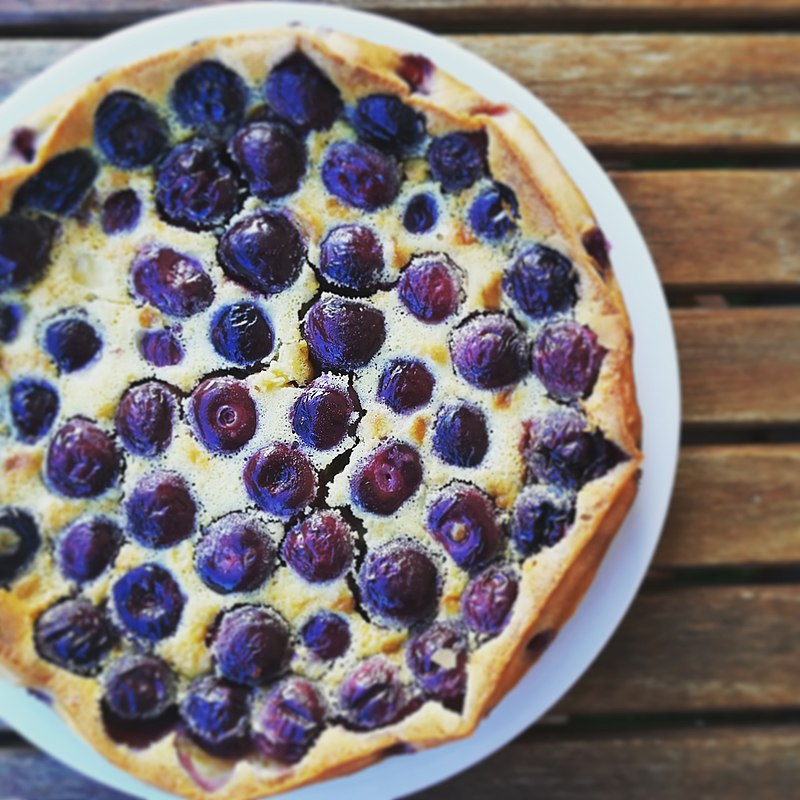

cla·fou·tis (kläfo͞oˈtē)noun:a tart made of fruit, typically cherries, baked in a sweet batter.
We'll learn about it here, what it is & how to make it.

So What is it really?
Clafoutis is a baked French dessert of fruit, traditionally black cherries, arranged in a buttered dish and covered
with a thick flan-like batter. The clafoutis is dusted with powdered sugar and served lukewarm, sometimes with cream.
The clafoutis comes from the Limousin region of France, and while black cherries are traditional, there are numerous variations
using other fruits, including red cherries, plums, prunes, apples, pears, cranberries or blackberries. When other kinds of fruit
are used instead of cherries, the dish is properly called a flaugnarde. The dish's name derives from Occitan clafotís, from the verb clafir, meaning "to fill" (implied: "the batter with cherries").
Clafoutis apparently spread throughout France during the 19th century.